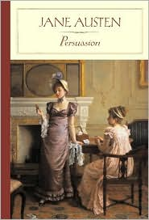

With only six completed books to her name, Jane Austen nontheless has left a lasting legacy on the world of English literature.
1811 - Sense & Sensibility
1813 - Pride & Prejudice
1814 - Mansfield Park
1815 - Emma
1817 - Persuation (published posthumpisly)
1817 - Northanger Abbey (published posthumpisly)
Meet Our 2016 Jane Austen Book Club Members
"Despite her short time behind the writing desk, Jane Austen remains one of the most well-known and admired writers in literary history because her characters resemble the real life relationships in the modern times as well. Here, six Californians started a book club to discuss the works of Jane Austen , only to find their relationships - old and new -- and they start their own versions of her novels in 21st century."
Here are the six members hosting the group once a month to discuss all of Austen's six novels for this year.
Bernadette The book club is the brainchild of fiftysomething six-time divorcee Bernadette, who latches onto the idea when she meets Prudie.
JocelynThe book club is the brainchild of fiftysomething six-time divorcee Bernadette, who latches onto the idea when she meets Prudie.
GriggA science fiction fan who's roped into the group by Jocelyn with the hope he and Sylvia will prove to be a compatible match.
PrudieA prim, married high school French teacher in her mid-20s, at a Jane Austen film festival.
SylviaA fortysomething librarian who recently has separated from her philandering lawyer husband Daniel after more than two decades of marriage.
Sense and Sensibility is a novel by Jane Austen, and was her first published work when it appeared in 1811 under the pseudonym "A Lady". A work of romantic fiction, better known as a comedy of manners, Sense and Sensibility is set in southwest England, London and Kent between 1792 and 1797,[1] and portrays the life and loves of the Dashwood sisters, Elinor and Marianne. The novel follows the young ladies to their new home, a meagre cottage on a distant relative's property, where they experience love, romance and heartbreak.
Jane Austen wrote the first draft of the novel in the form of a novel-in-letters (epistolary form) sometime around 1795 when she was about 19 years old, and gave it the title Elinor and Marianne. She later changed the form to a narrative and the title to Sense and Sensibility.[2] "Sense" in the book means good judgment or prudence, and "sensibility" means sensitivity or emotionality. "Sense" is identified with the character of Elinor, while "sensibility" is identified with the character of Marianne. By changing the title, Austen added "philosophical depth" to what began as a sketch of two characters.
From Pride & Prejudice
Pride and Prejudice is a novel of manners by Jane Austen, first published in 1813. The story follows the main character, Elizabeth Bennet, as she deals with issues of manners, upbringing, morality, education, and marriage in the society of the landed gentry of the British Regency. Elizabeth is the second of five daughters of a country gentleman, Mr. Bennet, living in Longbourn.
Set in England in the early 19th century, Pride and Prejudice tells the story of Mr. and Mrs. Bennet's five unmarried daughters after two gentries have moved into their neighbourhood: the rich and eligible Mr. Bingley, and his status-conscious friend, the even more rich and eligible Mr. Darcy. While Bingley takes an immediate liking to the eldest Bennet daughter, Jane, Darcy is disdainful of local society and repeatedly clashes with the Bennets' lively second daughter, Elizabeth.
Pride and Prejudice retains a fascination for modern readers, continuing near the top of lists of "most loved books". It has become one of the most popular novels in English literature, selling over 20 million copies, and receives considerable attention from literary scholars. Likewise, it has paved the way for archetypes that abound in many contemporary literature of our time. Modern interest in the book has resulted in a number of dramatic adaptations and an abundance of novels and stories imitating Austen's memorable characters or themes.
From Mansfield Park
Mansfield Park is the third novel by Jane Austen, written at Chawton Cottage between February 1811 and 1813. It was published in May 1814 by Thomas Egerton, who published Jane Austen's two earlier novels, Sense and Sensibility and Pride and Prejudice. When the novel reached a second edition in 1816, its publication was taken over by John Murray, who also published its successor, Emma.
The events of the story are put in motion by the marriages of three sisters. Lady Bertram married extremely well to the wealthy baronet Sir Thomas Bertram, while Mrs. Norris married a clergyman, who was given the living at the local parsonage by Sir Thomas; this allows the Norrises to live comfortably, yet far below the opulence of the Bertrams. The third sister, Mrs. Price, married a naval lieutenant who was shortly afterwards wounded in battle and left with a meager pension, scarcely enough to support their eventual household of nine children. Mrs. Norris, always wishing to appear virtuous, proposes that Lady Bertram take one of the children to live with her at Mansfield Park. They choose the eldest daughter Fanny Price, who is the protagonist of the novel. Thus, at age 10, Fanny is sent to live with her wealthy relatives at Mansfield Park.
From Emma
Emma, by Jane Austen, is a novel about youthful hubris and the perils of misconstrued romance. The novel was first published in December 1815. As in her other novels, Austen explores the concerns and difficulties of genteel women living in Georgian-Regency England; she also creates a lively comedy of manners among her characters.
Before she began the novel, Austen wrote, "I am going to take a heroine whom no one but myself will much like." In the first sentence she introduces the title character as "Emma Woodhouse, handsome, clever, and rich." Emma is spoiled, headstrong, and self-satisfied; she greatly overestimates her own matchmaking abilities; she is blind to the dangers of meddling in other people's lives; and her imagination and perceptions often lead her astray.
This novel has been adapted for several films, many television programs, and a long list of stage plays.
From Persuasion

Persuasion is Jane Austen's last completed novel, published posthumously. She began it soon after she had finished Emma and completed it in August 1816. Persuasion was published in December 1817, but is dated 1818. The author died earlier in 1817.
As the Napoleonic Wars come to an end in 1814, Admirals and Captains of the Royal Navy are put ashore, their work done. Anne Elliot meets Captain Frederick Wentworth after seven years, by the chance of his sister and brother-in-law renting her father's estate, while she stays for a few months with her married sister, living nearby. They fell in love the first time, but she broke off the engagement.
Besides the theme of persuasion, the novel evokes other topics, with which Austen was familiar: the Royal Navy, in which two of Jane Austen's brothers rose to the rank of admiral; and the superficial social life of Bath. It is portrayed extensively and serves as a setting for the second half of Persuasion. In many respects, Persuasion marks a break with Austen's previous works, both in the more biting, even irritable satire directed at some of the novel's characters and in the regretful, resigned outlook of its otherwise admirable heroine, Anne Elliot, in the first part of the story. Against this is set the energy and appeal of the Royal Navy, which symbolises for Anne and the reader the possibility of a more outgoing, engaged, and fulfilling life, and it is this worldview which triumphs for the most part at the end of the novel.
Persuasion is linked to Northanger Abbey not only by the fact that the two books were originally bound up in one volume and published together, but also because both stories are set partly in Bath, a fashionable city with which Austen was well acquainted, having lived there from 1801 to 1805.
From Northanger Abbey
Northanger Abbey was the first of Jane Austen's novels to be completed for publication, though she had previously made a start on Sense and Sensibility and Pride and Prejudice. According to Cassandra Austen's Memorandum, Susan (as it was first called) was written circa 1798–99. It was revised by Austen for the press in 1803, and sold in the same year for £10 to a London bookseller, Crosby & Co., who decided against publishing. In the spring of 1816, the bookseller was content to sell it back to the novelist's brother, Henry Austen, for the exact sum—£10—that he had paid for it at the beginning, not knowing that the writer was by then the author of four popular novels.
The novel was further revised by Austen in 1816/17, with the intention of having it published. Among other changes, the lead character's name was changed from Susan to Catherine, and Austen retitled the book Catherine as a result.
Austen died in July 1817. Northanger Abbey (as the novel was now called) was brought out posthumously in late December 1817 (1818 given on the title page), as the first two volumes of a four-volume set that also featured another previously unpublished Austen novel, Persuasion. Neither novel was published under the title Jane Austen had given it; the title Northanger Abbey is presumed to have been the invention of Henry Austen, who had arranged for the book's publication.